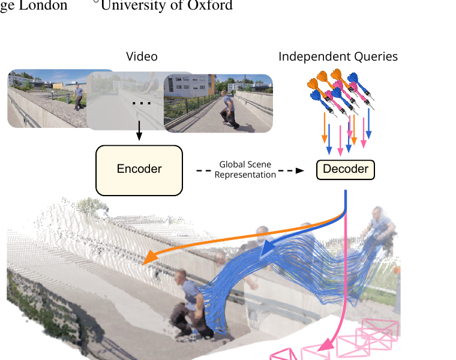
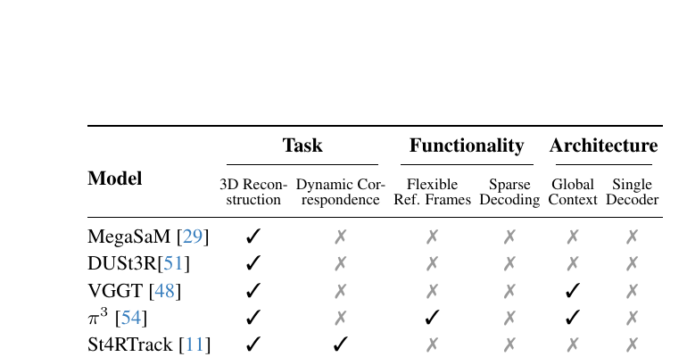
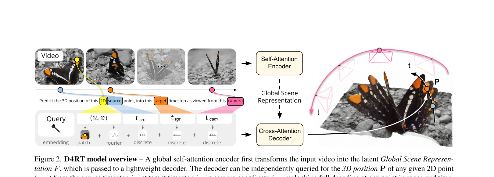
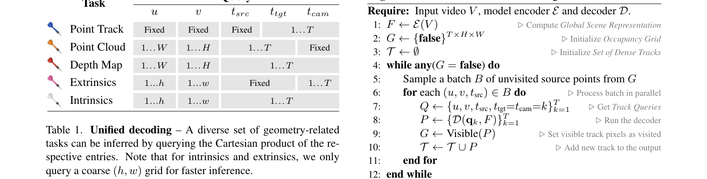
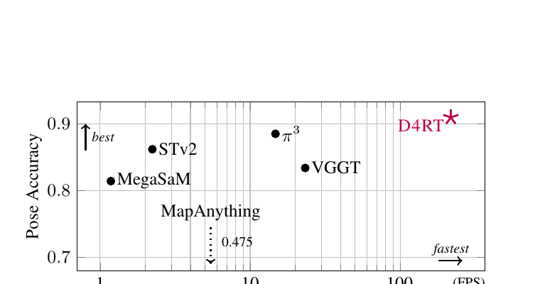
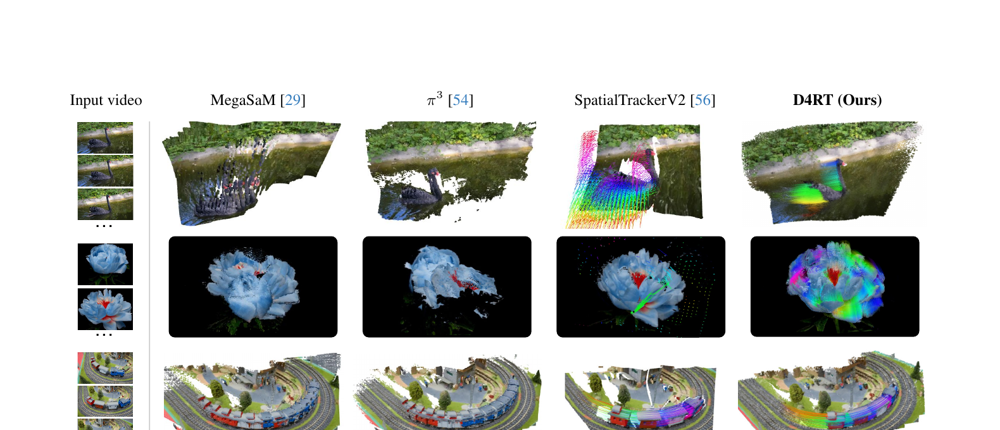

Efficiently Reconstructing Dynamic Scenes One D4RT at a Time
CVPR 2026 Best Paper. Google DeepMind / UCL / Oxford。arXiv:2512.08924。
⚠️ 关于代码:本文作者未公开官方实现(DeepMind 用内部框架 Kauldron 训练)。本文 §2/§4 中的代码引用全部来自社区第三方复现 WangXueyang-uestc/D4RT,仅用于"把论文公式落到具体张量操作"。复现代码不是作者权威实现,凡与论文叙述有出入处我都会显式标注。论文 6 大发现策略全部跑完后确认:官方 repo / weights 均不存在。

1. 出发点 (Motivation)
传统 3D 重建问的是:"所有东西、所有地方、所有时刻的几何是什么?"(everything, everywhere, all at once)。作者直接拍桌子:这种"穷举式、刚性"的范式根本不适合一个会动的世界。
问题在于,主流做法都是把"4D 理解"这件事拆成一堆专用零件:
- MegaSaM —— 靠一堆现成模型拼凑(单目深度、度量深度、运动分割各来一个),再用昂贵的 test-time 优化把这些信号融成几何一致的结果。慢、脆。
- VGGT —— 前馈,但每个任务一个专用 decoder head(深度一个、位姿一个、点云一个)。
- SpatialTrackerV2 —— 能处理动态,但是多阶段 + 迭代细化,推理慢。
更要命的是:这些方法几乎都无法为场景里动态的部分建立对应关系(correspondence)。要么只重建静态背景,要么把运动物体重建成"残影"(论文 Fig. 4 里 MegaSaM 把游过的天鹅复制了好几只)。

D4RT 的核心主张是一次范式转移:
不要再"逐帧稠密解码"(frame-level dense decoding),改成"按需查询"(on-demand querying)。
直觉:你想知道动态场景里某个像素在某一时刻跑到了 3D 空间的哪里 —— 那就直接问模型这一个点,而不是每一帧都把所有像素都解码一遍再去拼。绝大多数稠密解码的计算量其实是浪费的。
2. 方法 (Method)
核心思想(先讲人话)
把 D4RT 想成一座图书馆 + 一个问询台:
- Encoder(建馆):把整段视频读进去,压成一本"馆藏总目录" \(F\)(论文叫 Global Scene Representation)。这本目录一旦建好就冻住不动。它记录了整个场景的几何、跨帧对应、以及时间如何改变场景。
- Decoder(问询台):你拿一张查询单 \(q\) 去问:"第 \(t_{src}\) 帧、屏幕坐标 \((u,v)\) 上那个点,在第 \(t_{tgt}\) 帧、从第 \(t_{cam}\) 帧的相机视角看,它的 3D 坐标是多少?" 问询台翻一翻目录,直接给你一个 3D 点 \(P\)。
关键巧思:每张查询单互相独立处理,彼此不交流。要 1 个点就解 1 个点,要稠密重建就并行问几百万个点 —— 训练时只需采样少量点就能提供监督,推理时点数随便选、还能 trivially 并行。

2.1 D4RT 框架:两阶段编码-查询
给定视频 \(V \in \mathbb{R}^{T\times H\times W\times 3}\),encoder \(\mathcal{E}\) 抽取固定的全局表征:
—— 翻译: 把 T 帧视频整体压成 N 个 token、每个 C 维的"场景记忆"。这一步只算一次,之后反复复用。
接着定义查询 \(q = (u, v, t_{src}, t_{tgt}, t_{cam})\),其中 \((u,v)\in[0,1]^2\) 是源帧 \(t_{src}\) 上某点的归一化 2D 坐标,\((t_{tgt}, t_{cam})\in\{1,\dots,T\}\) 分别是目标时刻和参考相机坐标系的帧索引。decoder \(\mathcal{D}\) 把每个查询独立地与 \(F\) 做 cross-attention,产出 3D 点:
—— 翻译: 给一个点的"身份证"(在哪一帧、屏幕哪个位置、想看哪个时刻、用谁的相机坐标),模型还你它的 3D 坐标。
作者点出这个公式的三个妙处:① 索引可以不重合 —— \(t_{src}\)、\(t_{tgt}\)、\(t_{cam}\) 三者解耦,空间和时间彻底分离;② 每个查询独立解码 —— 训练推理都高效;③ 这个低层接口一口气解锁了一大堆下游任务。
从查询到 4D 重建 —— 这是全文最优雅的地方。只要换查询的"扫描方式",同一个模型就变出所有任务:

- 点轨迹:固定 \((u,v,t_{src})\),让 \(t_{tgt}=t_{cam}=\{1\dots T\}\) 扫一遍 → 这个点在全视频的 3D 轨迹。
- 点云:固定 \(t_{cam}\),扫所有像素 \((u,v)\) 和源帧 → 所有点在同一参考系下的 3D 位置(省掉了用噪声相机参数做坐标变换的步骤)。
- 深度图:令 \(t_{src}=t_{tgt}=t_{cam}\),只取输出 \(P\) 的 Z 分量。
相机参数怎么来? 这里有个漂亮的几何小技巧。要求帧 \(i,j\) 之间的相对位姿,就在两帧上各采一组网格点查询:
两组结果 \(\{\mathcal{D}(q_{i,k},F)\}_k\) 和 \(\{\mathcal{D}(q_{j,k},F)\}_k\) 描述的是同一批 3D 点在两个参考系下的坐标,于是只需求两组点之间的刚体变换 —— 用 Umeyama 算法解一个 \(3\times3\) SVD 即可。内参则假设主点在 \((0.5,0.5)\),由 3D 点反推焦距:
—— 翻译: 针孔相机里,屏幕坐标 (u,v) 和 3D 坐标 (px,py,pz) 之间差一个焦距比例。反过来用已知的两者解出焦距,再对 k 个点取中位数抗噪。
复现代码里
geometry.py实现了project_3d_to_2d(正向投影,见 L70)和针孔内参拆解(L57-L61),但没有实现完整的 Umeyama / 稠密追踪 —— 这部分论文有、复现没有,引用时已注明。
2.2 查询是怎么拼出来的
一个查询 token 由四块加起来:\((u,v)\) 的 Fourier 特征 + \(t_{src}/t_{tgt}/t_{cam}\) 三个离散学习嵌入 + 以 \((u,v)\) 为中心的 \(9\times9\) 局部 RGB patch 嵌入。最后这块 patch 是性能的关键(见 §4.4,去掉它深度误差从 0.302 涨到 0.366)。
repo/d4rt/models/query.py:L222-L263 — 第三方复现:把 Fourier(u,v) + 三个时间嵌入 + RGB patch 拼成查询向量(对应 Fig. 2 底部那一排加号)
def forward(self, images, coords_uv, t_src, t_tgt, t_cam, video_resized=None):
# Fourier features for (u, v)
fourier_feat = self.fourier_embed(coords_uv) # (B, N, fourier_dim)
# 三个时间维度各自一套离散可学习嵌入
t_src_emb = self.t_src_embed(t_src) # (B, N, time_embed_dim)
t_tgt_emb = self.t_tgt_embed(t_tgt)
t_cam_emb = self.t_cam_embed(t_cam)
# 以 (u,v) 为中心抠 9x9 RGB patch 再卷积成嵌入
patch_feat = self.patch_embed(images, coords_uv, t_src, video_resized=video_resized)
query_features = torch.cat([
fourier_feat, t_src_emb, t_tgt_emb, t_cam_emb, patch_feat
], dim=-1)
queries = self.query_proj(query_features) # (B, N, query_dim)
return queries
注意三个时间维各用一套独立的 nn.Embedding(t_src_embed / t_tgt_embed / t_cam_embed),这正是"空间-时间解耦"在代码里的样子。
Decoder 为什么不能让查询互相看? 论文强调:每个查询只跨注意力到 \(F\),查询之间绝不自注意力。作者说他们在早期实验里一旦在查询间开自注意力,性能大幅下跌(out-of-distribution 效应)。复现代码忠实地体现了这点 —— 整个 decoder layer 里根本没有 self-attention 模块:
repo/d4rt/models/decoder.py:L52-L77 — 第三方复现:decoder layer 只有 cross-attn(查询当 Q,encoder 特征当 K/V)+ FFN,刻意没有查询间 self-attn
def forward(self, queries, encoder_features, query_mask=None, encoder_mask=None):
# Cross-attention: 查询 attend 到 encoder 特征。Q 来自查询,K/V 来自 F。
# 这样保证查询彼此独立(没有 query-query 交互)
q_norm = self.norm1(queries)
cross_attn_out, _ = self.cross_attn(
q_norm, encoder_features, encoder_features, # Q, K, V
key_padding_mask=encoder_mask)
queries = queries + self.dropout1(cross_attn_out)
# Feed-forward
queries = queries + self.dropout2(self.ffn(self.norm2(queries)))
return queries
2.3 训练目标
模型端到端训练,主监督是对归一化后的 3D 坐标的 L1 损失。归一化分两步:先除以各自的平均深度,再过 \(\text{sign}(x)\cdot\log(1+|x|)\) 抑制远处点对损失的过度影响。此外还有一组辅助损失:2D 坐标 L1、表面法向量余弦相似度、可见性二元交叉熵、点运动 L1。最后加一个置信度惩罚 \(-\log(c)\),\(c\) 同时用来给 3D 误差加权:
—— 翻译: 主菜是 3D 坐标误差(用模型自报的置信度 c 加权:对没把握的点放松要求);-log(c) 是"防作弊"惩罚,不让模型一律报低置信度来逃避惩罚;后面几项是配菜,各管一类几何属性。
这个组合在复现里几乎逐字对得上:
repo/d4rt/utils/losses.py:L43-L98 — 第三方复现:3D 主损失的"平均深度归一化 + sign·log(1+|x|) + 置信度加权 L1"三步,精确对应论文 §2.3
def log_transform(self, x):
return torch.sign(x) * torch.log(1.0 + torch.abs(x)) # 抑制远处点
def compute_l3d_loss(self, pred_3d, gt_3d, confidence=None, mask=None):
# 1) 按各自平均深度归一化
pred_depth_mean = pred_3d[:, :, 2].mean(dim=-1, keepdim=True).unsqueeze(-1)
gt_depth_mean = gt_3d[:, :, 2].mean(dim=-1, keepdim=True).unsqueeze(-1)
pred_3d_n = pred_3d / (pred_depth_mean + 1e-6)
gt_3d_n = gt_3d / (gt_depth_mean + 1e-6)
# 2) log 变换
loss_per_query = F.l1_loss(self.log_transform(pred_3d_n),
self.log_transform(gt_3d_n), reduction='none').mean(-1)
# 3) 用置信度加权(论文公式里的 c·L_3D)
if confidence is not None:
loss_per_query = loss_per_query * confidence.squeeze(-1)
...
2.4 全像素稠密追踪(Algorithm 1)
D4RT 一个杀手锏:能为视频里所有像素(含动态)高效算稠密对应。但暴力做法要 \(O(T^2HW)\) 个查询,大部分是冗余的。
作者引入占用栅格 \(G \in \{0,1\}^{T\times H\times W}\)(Algorithm 1):只从没被访问过的像素发起新轨迹,每条全视频轨迹会把它可见经过的所有时空像素标记为"已访问"。实测能带来 5–15× 的自适应加速(取决于运动复杂度)。这之所以可行,正是因为 D4RT 的 decoder 既稀疏又轻量 —— 换成 frame-level 稠密解码的方法,这招根本玩不起。
3. 结论 (Key findings)
D4RT 在"动态 4D 重建与追踪"上几乎横扫,且又快又准。
① 3D 点追踪(TAPVid-3D,Table 4) —— 在相机坐标系和世界坐标系两种协议下都拿 SOTA。例如 DriveTrack(已知内参)上 AJ 0.304 vs SpatialTrackerV2 的 0.195;世界坐标系 DriveTrack 上 L1 误差 0.017 vs STv2 的 0.201(低一个数量级)。
② 点云 / 深度(Table 5) —— Sintel 点云 L1 0.768,把次优的 π³(1.139)甩开一大截;深度在 scale-only 和 scale-and-shift 两种对齐下都顶级。
③ 相机位姿(Table 6) —— Sintel ATE 0.065、Pose AUC 83.5 均为最佳,在动态户外(Sintel)和静态室内(ScanNet/Re10K)上同时领先。
④ 速度才是真正的暴击 —— 位姿估计 200+ FPS,比 VGGT 快 9×、比 MegaSaM 快 100×(Fig. 3 右上角"又快又准")。3D 追踪吞吐(Table 3)在 60 FPS 目标下能产 550 条全视频轨迹,而 STv2 只有 29 条、DELTA 是 0 条 —— 整体快 18–300×。

⑤ 唯一能稠密重建动态像素的方法 —— Fig. 4 的定性对比最有说服力:纯重建法(MegaSaM、π³)在动态场景下要么把物体复制成残影、要么直接重建失败;STv2 能追动态但只能从单帧起追,遮挡处留下空洞;只有 D4RT 把视频所有像素(含被遮挡后重现的部分)统一重建进同一个 4D 表示。

⑥ 关键消融 —— ① 局部 RGB patch 提升巨大(Sintel 深度 AbsRel 0.366→0.302,且边界更锐利);② 性能随 backbone 单调上升(ViT-B→ViT-g,深度 AbsRel 0.319→0.191);③ 各辅助损失各有所长 —— 置信度损失对位姿至关重要(去掉后 ATE +0.126),2D/法向量损失主要帮深度。
4. 实现细节 (Implementation notes)
把论文叙述、复现代码、附录抠出来的关键工程细节:
- 规模:encoder 用 ViT-g(40 层,1B 参数),decoder 仅 8 层 cross-attention(144M)。时空 patch size 是 \(2\times16\times16\)(时间维也切块)。
- 训练:48 帧 clip、\(256\times256\) 分辨率;每步解码 2048 个随机查询(在特定区域过采样以提高训练效率);AdamW、500k 步、local batch size 1、跨 64 块 TPU,总共只用了 2 天出头。框架是 DeepMind 内部的 Kauldron。
- 任意宽高比:输入先 resize 成固定正方形再 tokenize,原始宽高比单独编码成一个 token 喂进 transformer。
- 局部 patch 走原分辨率(附录 C 的隐藏彩蛋):encoder 在 \(256\times256\) 上跑,但查询的 RGB patch 从原始高分辨率视频里抠 —— 这显著提升了边缘/细节的亚像素精度。复现代码
query.py:L117-L131的 docstring 明确标注了这一点(patch extraction for queries uses the original resolution)。 - "查询间不能自注意力"是反直觉的:一般 transformer 都靠 token 互相看来涨点,这里偏偏相反 —— 开了 query-query self-attention 性能暴跌,作者归因于 OOD 效应(推理时查询可以自由组合、彼此无关,训练时若假设它们相关就会过拟合到相关结构)。
- 相机是"后处理"出来的,不是端到端回归:位姿来自对预测 3D 点做 Umeyama/SVD,内参来自焦距反推 + 对 k 个点取中位数抗噪;主点硬编码在 \((0.5,0.5)\),假设针孔模型,鱼眼等畸变需要额外的非线性细化步骤。
- 13 维输出打包:复现 decoder 把 13 维输出切成 XYZ(3)+UV(2)+可见性(1)+位移(3)+法向量(3)+置信度(1),正好对应论文那一组主损失 + 辅助损失。可见性和置信度输出 logits(用
binary_cross_entropy_with_logits/sigmoid处理),这是数值稳定的常规做法。 - 论文 vs 复现的差距(诚实标注):
- 复现的
LocalRGBPatchEmbedding用 Python 双重 for 循环逐点抠 patch(query.py:L159-L167),纯粹是可读性实现,真要训练会非常慢 —— 官方在 Kauldron 里几乎肯定是向量化 gather。 - 复现没有实现 Umeyama 相机求解和 Algorithm 1 的占用栅格稠密追踪;这两块是论文核心卖点但复现缺失,本文相关公式/算法直接引自论文。
- 复现的超参(Fourier 频率数、维度)是复现者自定的,未必等于官方配置。
- 复现的
5. 批判性总结 (Critical assessment)
Strengths
- 接口的优雅是真的优雅:把深度、点云、轨迹、内外参全部统一成"改查询索引"的笛卡尔积(Table 1),这是那种"一看就觉得本该如此"的设计。配 CVPR Best Paper 的"简洁有力"气质。
- 速度是碾压级的,而且不是靠牺牲精度换来的 —— 同时拿下 SOTA 精度和 18–300× 的吞吐,这在 4D 重建里很少见。根因(独立查询 → trivial 并行 + 稀疏解码)逻辑自洽。
- 真正解决了"动态对应"这个老大难:之前的方法要么不碰动态、要么留空洞,D4RT 是 Fig. 4 里唯一把动态像素完整重建的。
- 干净的 scaling 曲线(Table 9)给了"继续堆 encoder 就能更好"的信心。
Limitations / open questions
- 没有官方代码和权重(DeepMind 一贯作风),且训练混入了未公开的"internal datasets" —— 可复现性打折。社区复现存在但不权威。对一篇 Best Paper 而言,这是最大的实用性遗憾。
- 论文本身没有 Limitations 章节。结论写得漂亮,但回避了对失败模式的讨论,这本身是写作上的弱点。
- 离散时间嵌入限制了视频长度:三个
nn.Embedding(max_frames, ...)意味着时间维是有上限的离散索引,训练 clip 只有 48 帧。对任意长(几千帧)的视频如何优雅外推,文中没给答案 —— 这与"全局 self-attention encoder" \(O(N^2)\) 的开销叠加,长视频可能是软肋。 - 独立查询是双刃剑:好处是并行;代价是查询间没有显式一致性约束。点云的全局一致性完全依赖 encoder 在 \(F\) 里"烤进"一致的几何 —— 一旦 \(F\) 对某区域估计有偏,独立解码出来的点之间没有相互纠错的机制。
- 相机是后处理而非端到端:位姿/内参由预测的 3D 点经 SVD + 取中位数反推,误差会从点预测一路传导进相机参数;主点硬编码在中心、默认针孔,非常规相机要打补丁。
- "过采样特定区域"训练(2048 个查询 oversample on specific regions)是个未充分展开的细节 —— 采样策略对动态区域的表现影响可能很大,但附录之外讨论不足。
When to use / not use
- 适合:需要从单段视频前馈拿到统一 4D 输出(深度+点云+轨迹+相机)、对吞吐敏感(实时/大规模处理)、且场景含运动的应用。
- 慎用:需要可复现的开源实现/权重(目前没有);超长视频(>百帧)的稳定性未验证;需要标定级精度相机参数(后处理估计的内外参未必够准)。
Further reading
- 它直接对标和超越的:VGGT、MegaSaM、π³、SpatialTrackerV2、DUSt3R、St4RTrack。
- 思想来源:Scene Representation Transformer(SRT)—— D4RT 的"全局表征 + 查询解码"骨架正是 SRT 风格。
- 任务基准:TAPVid-3D(3D 点追踪)、MPI Sintel、ScanNet。
讨论 / Comments
评论托管在本仓库的 GitHub Discussions, 需 GitHub 账号。